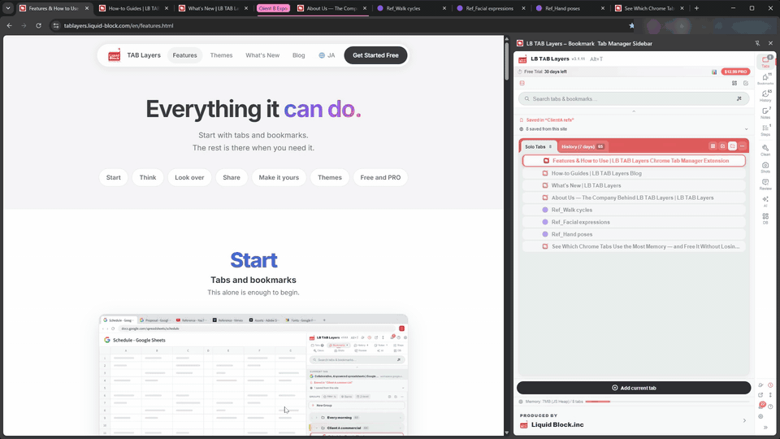
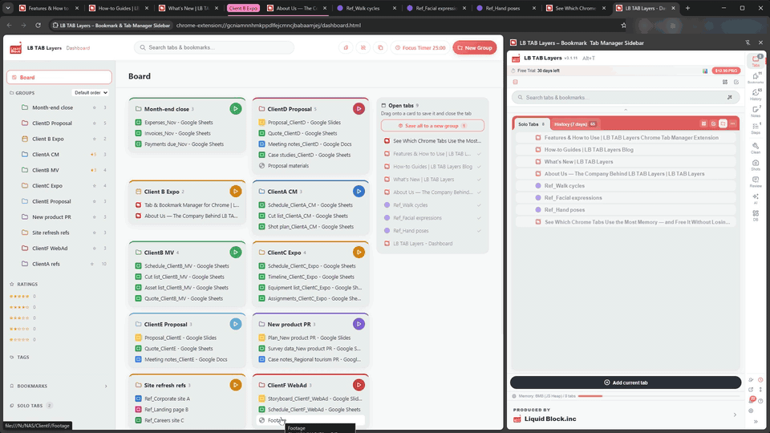
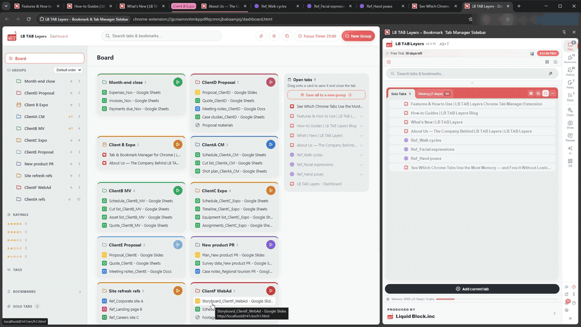

For people who want to look across all their groups on a big screen.
Open the Dashboard PRO
See everything on a big screen
Where: “DB” in the right rail / button at the top
Click “DB” in the right rail to open the Dashboard in a new tab. On the Board, all your groups are laid out as colored cards, and ▶ opens a group's pages together. Drag an open tab onto a card to put it away. PRO feature.

When things build up, look across all your groups on a big screen.
All your groups as colored cards. ▶ opens them together. Drag an open tab onto a card to put it away
Where: The Dashboard's first screen
Click “DB” in the right rail to open the Dashboard in a new tab. On the Board, all your groups are laid out as colored cards, and ▶ opens a group's pages together. Drag an open tab onto a card to put it away. PRO feature.

Drag an open tab onto a card and it goes into that group.
Look inside a group PRO
See pages as cards, and add notes, stars and tags. Sort by stars
Where: Choose a group from the list on the left
Choose a group from the list on the left of the Dashboard and its pages are laid out as cards. Add notes, stars and tags to the cards, and sort them by stars. PRO feature (available during the free trial).
Dashboard search PRO
Search groups, tabs and Chrome bookmarks together
Where: Search at the top
The search at the top of the Dashboard looks through groups, saved pages, open tabs and Chrome bookmarks together. Results are shown by type. PRO feature (available during the free trial).

Search, and groups and bookmarks are shown separately.
View & move Chrome bookmarks PRO
See all of Chrome's folders and turn them into TAB Layers groups
Where: “Bookmarks” on the left
“Bookmarks” on the left of the Dashboard shows every folder in Chrome's bookmarks. Turn a selected folder into a TAB Layers group. PRO feature (available during the free trial).
Clean up duplicates PRO
Find identical folders and pages, and merge them
Where: “Clean up duplicates” at the top
“Clean up duplicates” at the top of the Dashboard finds folders with the same name and bookmarks for the same page, and merges them. PRO feature (available during the free trial).
Check broken links PRO
Find bookmarks that no longer open, and move them to the Trash
Where: “Check broken links” at the top
“Check broken links” at the top of the Dashboard finds bookmarks that no longer open and moves them to the Trash. To check, it visits your saved sites one by one. PRO feature (available during the free trial).
Manage the archive PRO
A list of archived groups. Restore or delete
Where: “Archive” on the left
“Archive” on the left of the Dashboard lists the groups you've put away. Restore or delete them from here. PRO feature (available during the free trial).
Thumbnails
Show page pictures on cards and in lists. Choose sites that are never captured
Where: Settings › Privacy
Turn on Thumbnails in Settings › Privacy and page pictures appear on cards and in lists. It is off by default. A picture is taken when you open the page, and is stored on this computer. You can also choose sites that are never captured.
Clean
Find and remove duplicates and broken links across all of Chrome's bookmarks
Where: “Clean” in the right rail
“Clean” in the right rail finds duplicates and broken links across all of your Chrome bookmarks and tidies them up. What you remove goes to the Trash.